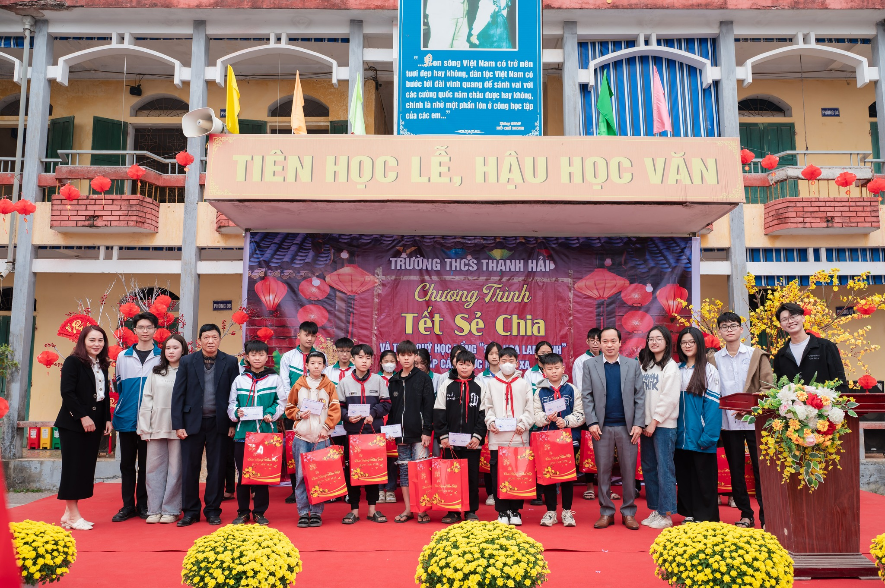
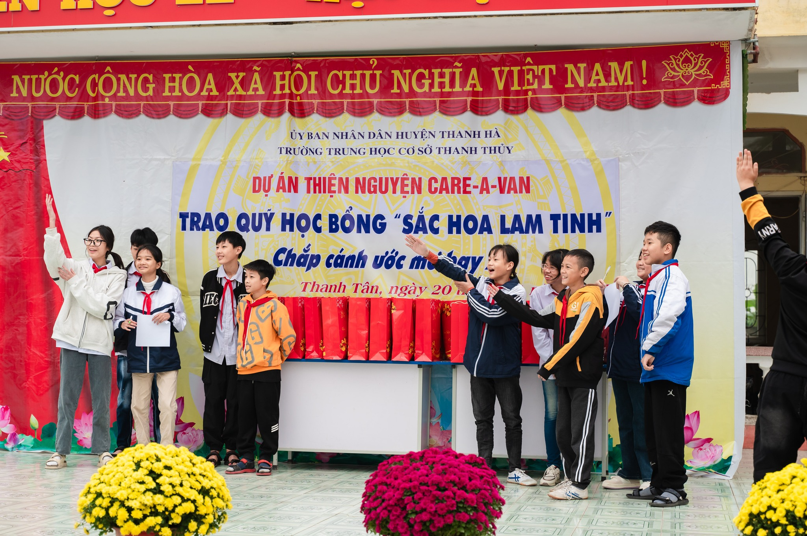
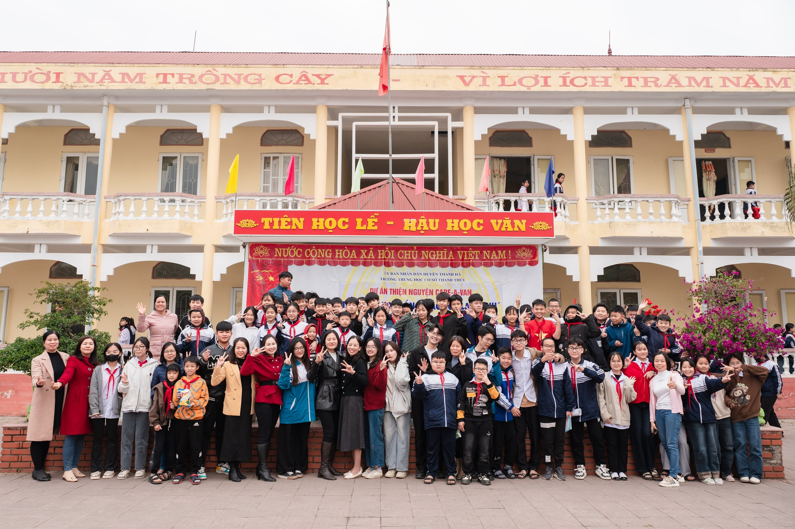
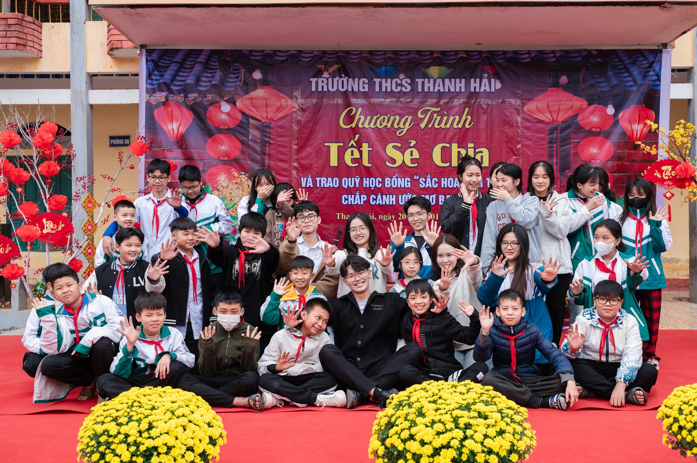
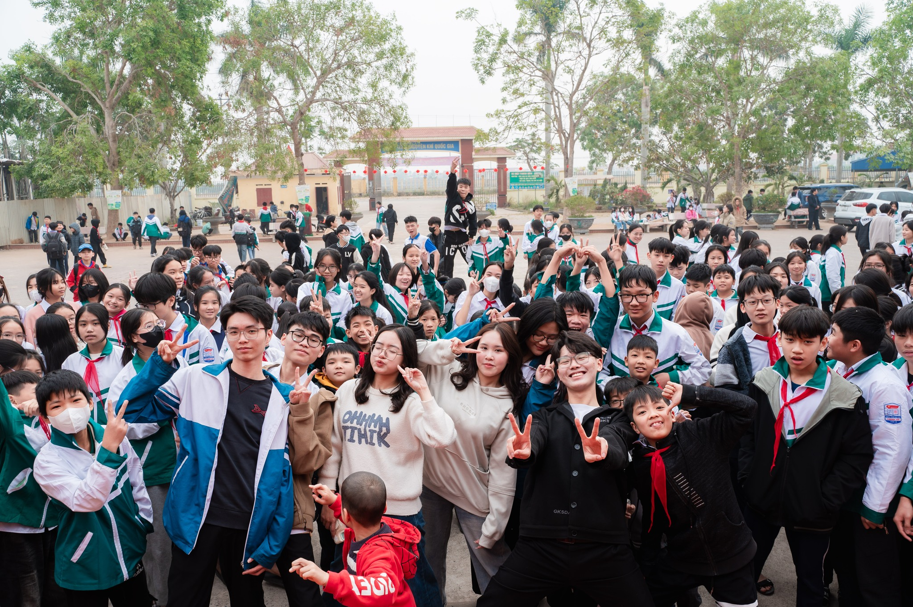

Care-A-Van
- Founder -
An educational charity project supporting underprivileged children in Hai Duong through fundraising and scholarship award events.


Driven by a deep commitment to educational equity, I have actively contributed to initiatives that support academically promising students facing financial challenges. I drafted funding proposals and organized a Christmas sale event, successfully raising over
$620 to provide 40 scholarships.
To amplify our message “"Children are the tender shoots of today and the leaders of tomorrow.", I built and managed an online community of more than 4,000 followers,
using social media storytelling to highlight educational inequalities and inspire donations. I also organized a scholarship award ceremony that attracted over 1,500 students
and garnered coverage from major media outlets such as Hai Duong Newspaper, Citizen Encouragement Newspaper, and Hai Duong Provincial Television Station.

Feeling connected with students
In addition, I developed strategic partnerships with local organizations—including the
Provincial and District Associations for Promoting Education—and school principals to broaden our impact and ensure transparent fund allocation.
Leading a dedicated team of
20 volunteers , I recruited, trained, and coordinated efforts across fundraising, event planning, and content creation.
Standing among thousands of students, I felt the power of connection — simple, pure, and unforgettable. That day wasn’t just about giving, but about receiving moments that will stay with me forever. That event was a turning point that helped me grow from the inside out. Through these experiences, I have not only witnessed the

power of community-driven change but also
deepened my passion for making education accessible to all .

“and plus many junior fans”